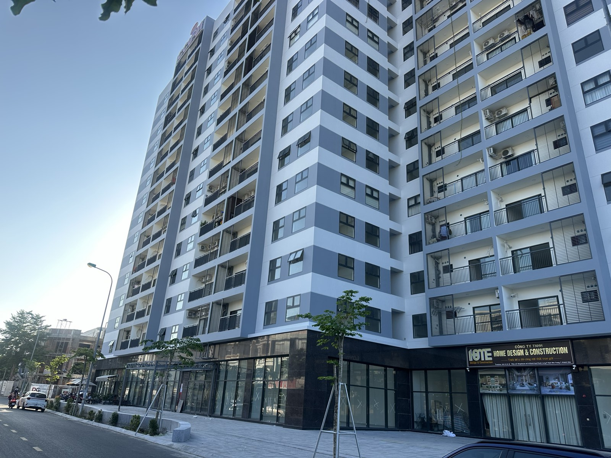

899.857 căn nhà ở xã hội cho 5 năm: người thu nhập trung bình ở Khánh Hoà nên chờ hay tìm đường khác
Một nghị quyết vừa ban hành cuối tháng 9 đặt lại toàn bộ chỉ tiêu nhà ở xã hội cả nước cho 5 năm tới. Tôi cập nhật lại những con số quan trọng nhất cho Khánh Hòa, và nói thẳng: nếu không thuộc diện ưu tiên, nên tính phương án B ngay từ bây giờ.

Nhà ở xã hội là một con đường thật — nhưng cần biết rõ mình đang chờ bao lâu, và còn đường nào khác.
Chỉ tiêu mới: 899.857 căn cho cả nước, Khánh Hòa 7.343 căn
Theo Nghị quyết 303/NQ-CP ban hành ngày 30/9/2026, cả nước được giao chỉ tiêu 899.857 căn nhà ở xã hội và nhà cho thuê trong giai đoạn 2026–2030, trong đó khoảng 21% là căn cho thuê (191.023 căn), phần còn lại là bán hoặc thuê mua. Mục tiêu tổng thể đến 2030 là từ 1 triệu căn trở lên.
Riêng Khánh Hòa, theo số liệu cập nhật đầu tháng 10, được giao 7.343 căn cho cả giai đoạn, chia theo năm: 2026: 1.500 căn · 2027: 2.400 căn · 2028: 2.143 căn · 2029: 600 căn · 2030: 700 căn.
Một chỗ dễ nói nhầm: 7.343 khác với 21.401
Cùng lúc có một con số khác cũng đang lưu hành: tỉnh dự kiến triển khai 15 dự án với 21.401 căn ngay trong năm 2026. Hai con số này không mâu thuẫn nhưng dễ bị gộp nhầm: 7.343 căn là chỉ tiêu Trung ương giao phải hoàn thành cho cả 5 năm, còn 21.401 căn là quy mô các dự án đang được triển khai trên thực địa — một con số về nguồn cung dự kiến, không phải chỉ tiêu bắt buộc. Khi nói chuyện với ai về nhà ở xã hội, nên nói rõ đang dùng con số nào, không gộp hai con số lại với nhau.
Về nhu cầu thực tế, một số liệu riêng cho biết tính đến nay tỉnh đã có hoặc đang làm khoảng 25.937 căn, đáp ứng khoảng 26,6% nhu cầu ước tính đến 2030 (gần 157.000 căn). Giá phổ biến đang ở mức khoảng 18 triệu đồng/m² ở khu vực phía Nam và 21–24,6 triệu đồng/m² ở khu vực phía Bắc của tỉnh.
Nút thắt không nằm ở quỹ đất, mà ở vốn vay ưu đãi
Một điểm đáng chú ý: vốn vay ưu đãi dành cho người mua nhà ở xã hội năm 2026 mới được bố trí khoảng 104 trong tổng nhu cầu khoảng 396 tỷ đồng. Nghĩa là ngay cả khi có đủ điều kiện mua và tìm được dự án còn căn trống, phần vay ưu đãi — vốn là lý do chính khiến nhà ở xã hội rẻ hơn hẳn nhà ở thương mại — vẫn đang trong tình trạng thiếu vốn bố trí.
Nên chờ hay tìm đường khác?
Với người đủ điều kiện mua nhà ở xã hội (đúng đối tượng, đúng mức thu nhập theo quy định, chưa có nhà ở), đây vẫn là con đường đáng theo — giá thấp hơn hẳn thị trường thương mại. Nhưng cần nhìn thẳng vào hai điều: tiến độ bàn giao trải dài tới tận 2030, và phần vốn vay ưu đãi hiện chưa đủ cho toàn bộ nhu cầu.
Với người thu nhập trung bình nhưng không chắc mình đủ điều kiện, hoặc không muốn chờ nhiều năm, tôi thấy có hai phương án thường bị bỏ qua:
- Thuê nhà ở xã hội thay vì mua — tỷ trọng căn cho thuê trong chỉ tiêu mới đã tăng lên khoảng 21%, nghĩa là nguồn cung cho thuê sẽ nhiều hơn trước.
- Căn hộ thương mại diện tích nhỏ, giá vừa túi tiền ở khu vực ngoài trung tâm — không có ưu đãi lãi suất, nhưng không phải chờ xét duyệt đối tượng và không phụ thuộc vào tiến độ giải ngân vốn ưu đãi của nhà nước.
Số liệu trong bài lấy từ Nghị quyết 303/NQ-CP (30/9/2026) và báo chí công khai (VnExpress, Báo Khánh Hòa) đến ngày 9/10/2026 — chưa đọc toàn văn nghị định, các con số nên được đối chiếu lại tại cơ quan nhà ở xã hội địa phương trước khi làm hồ sơ. Bài không gắn mã hay giá của bất kỳ dự án cụ thể nào.
"Rồi, ngày mới tốt lành nhé."
Sống tử tế · Kiếm tiền hạnh phúc · Cho đi giá trị
Đang tìm hiểu điều kiện mua hoặc thuê nhà ở xã hội?
Gửi tôi thông tin — tôi giúp anh chị tra lại điều kiện và tiến độ các dự án đang triển khai tại Khánh Hòa. Miễn phí.
Nhắn Zalo — 0869 668 638